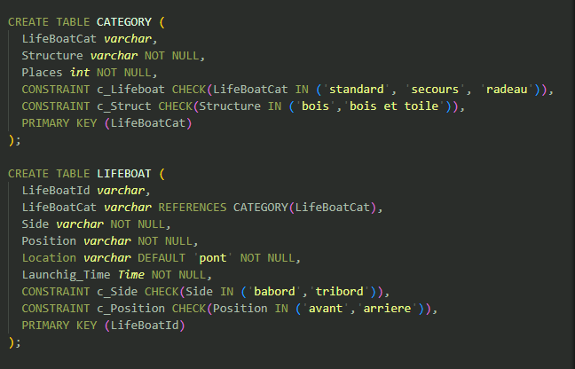

Cette SAE à été réalisée en groupe de 2, le but était de créer et exploiter une base de données en rapport avec le nauffrage du titanic
Dans un premier temps nous avons identifié les différents besoins et contraintes et nous avons mis en place la base de données en partant d'un fichier fourni mais incomplet.
Par la suite, nous avons intérogé cette base afin de répondre à une série de questions données.
Cette SAE permet de se rendre véritablement compte de l'importance des bases de données et de montrer que grâce à elles il est possible de manipuler un grand nombre de données.
Images du projet
Exemple de création de tables pour la base
